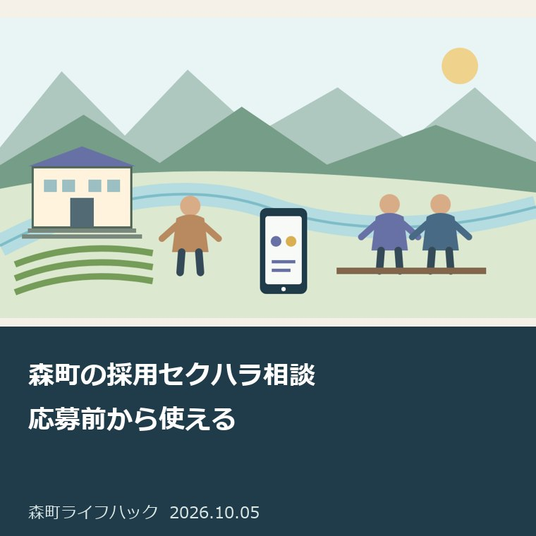
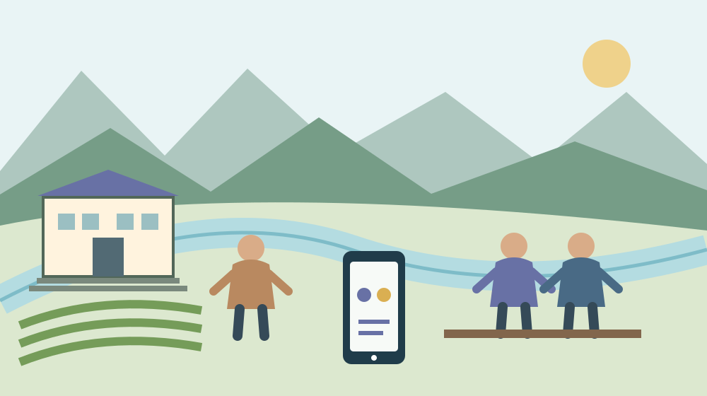
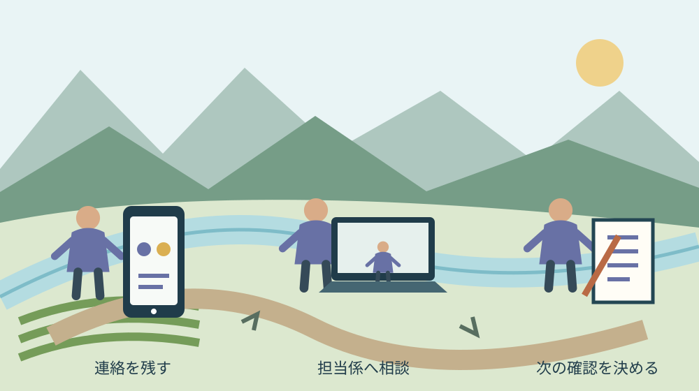

月曜・手続きと家族の段取り
森町の採用セクハラ相談｜応募前から使える

Q. まだ応募していなくても、採用中の不安を相談していい？
A. 森町役場の採用や見学に関するセクシュアルハラスメントは、応募前から選考終了後まで総務課人材育成係へ相談できます。電話は0538-85-6301、平日8時30分～17時15分です。町は相談や事実確認への協力を理由に採用選考で不利益に扱わないと案内しています。民間企業全般の専用窓口とは区別します。
町役場の採用・見学が相談の範囲
森町の「求職者等に対するセクシュアルハラスメント対策」は、町の採用や見学等に関わる人への対応を案内したページです。表示更新日は2026年10月1日。この記事は2026年10月5日に本文を確認しました。森町役場の応募者や見学者が相談する入口を整理し、民間企業全般の採用相談と混同しない範囲で扱います。
森町で働く場を支える職員や、採用の準備を担う人は、日常業務と候補者への説明を並行しています。私は、その仕事を軽く見るつもりはありません。その上で、応募する人が不安を抱えたまま次の選考へ進む負担も減らす必要があります。相談先を公表することは、採用を支える側にも確認の基準を作ると考えます。
対象となる人は、町の求人へ応募する求職者だけではありません。町が実施する採用に関係する活動への参加者、職場体験や見学の参加者も含まれます。まだ願書を出していないから関係がない、と狭く読まないことです。実際の関わりが対象となるか迷う場合は、人材育成係へ活動の内容を説明して確認します。
私は、町内の会社へ応募している方に、この電話がその会社の採用ハラスメント専用窓口だと案内しません。町が雇用する職員等と求職者等の関わりを扱うページだからです。勤務地が森町であることと、森町役場の採用であることは違います。相談先を選ぶときは、応募先と連絡をした人の立場を先に照合します。
応募前から選考終了後まで相談できる
森町役場の採用に関する相談窓口は、総務課人材育成係です。直通電話は0538-85-6301、問い合わせ時間は平日8時30分から17時15分まで。町は応募前、申込後、選考中、選考終了後のいずれの段階でも相談できるとしています。応募の受付が済むまで相談を待つ必要はありません。
私は、電話を掛ける前に、どの段階かを一行で書く方法を勧めます。「見学を検討中」「応募後に連絡を受けた」「面接が終了した」などです。これは町の必須申告書式ではありません。相談の最初に状況を伝え、話したい出来事と今後の予定を混ぜずに説明するための、本人用の準備です。
町は、相談や事実確認への協力を理由に、採用選考等で不利益に取り扱わないと明記しています。選考はあらかじめ定めた基準に基づいて公正に行うという案内です。これは町の公表内容として伝えます。相談したら必ず合格する、希望する採用結果になるという保証へ言い換えないようにします。
私は、窓口が公表した不利益取扱いをしないという説明と、本人の不安を分けて受け止める方がよいと考えます。説明を読んでも怖さがなくなるとは限りません。最初の電話で、どの範囲の話をしたいか、相談後の連絡をどう受けたいかを伝えられます。話しにくい部分をいきなり全て説明するよう家族が迫る必要はありません。

電話やSNSの連絡も対象活動に含まれる
森町の公式案内が対象活動として挙げるのは、採用試験・面接、インターンシップ、職場体験・見学、町職員への訪問、電話・メール・SNS・オンラインでのやり取りです。会場にいる時間だけに限定されていません。町役場の採用活動に関係する連絡で不安を感じたときも、日時と内容を整理する材料になります。
意外に感じるのは、応募書類を出す前の見学も対象に含まれる点です。私は、正式な選考ではないから我慢しなければならない、と考えない方がよいと思います。働く場所を知るための活動で不安が起きたなら、応募へ進む前に窓口を確認できます。相談できる時期が先に見えることには、具体的な意味があります。
町が挙げる性的な言動には、性的な事実や経験への質問、性的な冗談、必要のない身体への接触、性的関係の要求、私的な食事や交際への繰返しの誘い、わいせつな画像を見せることなどがあります。異性への言動だけでなく、同性への言動も対象です。性別だけで相談の対象外と決めないようにします。
私は、この記事に例がないという理由で、気になる出来事を相談から外す必要はないと考えます。一方で、例の言葉と似ているから必ず違法だと判断もしません。実際の関係、場面、言葉を窓口へ伝え、対象や対応を確認します。体験していない出来事や誰かの評判を付け足して、本人の記録を膨らませないことです。
面接と連絡方法で町が示した対応
森町は、採用試験を町が指定した日時と場所で行い、採用面接は原則として複数の職員で行うとしています。業務上の必要なく個室などで一対一にならないよう配慮する案内です。面接に不要な性的質問や私生活へ過度に立ち入る質問を行わず、面接や見学後の私的な食事・交際の誘いも禁止するとしています。
連絡には町が指定する電話やメール等を使い、職員個人のSNSや私用メールで応募者へ連絡することを原則認めないとしています。採用と関係のない私的なメッセージや執拗な連絡も禁止する案内です。応募する人は、どの連絡経路を町が示したかを、気になる連絡を照合する材料にできます。
私は、「原則」という言葉を勝手に消して、どの場面でも同じ方法と断言しない方がよいと考えます。公式の説明と実際の連絡が違って見えたら、窓口へ確認する理由になります。相手が町職員を名乗ったことだけで、採用に必要な連絡と決めないことです。疑問は個人のアカウントで解決しようとせず、町の公表窓口へ戻ります。
連絡の真偽を確認する場合、私は受信したメッセージの番号だけに折り返す方法を勧めません。森町の採用相談の公式ページから総務課人材育成係の番号を確認します。本人情報を新しい相手へ送る前に、連絡の目的と正式な経路を確かめます。
良い点｜相談する時期と相手が見える
森町の採用セクハラ相談は、応募前から選考終了後までという相談時期と、担当係・電話・時間を公開しています。私は、相談する資格があるのかを本人が一人で悩み続ける負担を減らせる点を評価します。就職を考える人が、正式な応募に進む前から入口を知れることは、見学の段取りにも役立ちます。
面接や連絡方法の取り決めが具体的に書かれている点も良いと考えます。私は、「安心してください」という一言だけより、複数の面接担当や指定の連絡経路が見える方が、確認に使えると思います。採用する側も候補者へ説明する基準を共有できます。規則の存在を、職員個人の善意だけに頼らない形へ近づけられます。
町が不利益取扱いをしないと明示していることも評価します。私は、選考への影響を心配する人に「気にしすぎ」と言わない方がよいと考えます。公表文を確認してから相談し、その後の連絡方法も尋ねることができます。本人の不安を受け止めつつ、根拠を持って次の行動を選べる入口ができています。
森町の「就職支援」は、ハローワークや県の就職関連情報等を案内しています。私は、働く場を探す情報と、町役場の採用で困ったときの窓口が別々に見える点を評価します。仕事探しを進めることと、相談をすることを対立させないためです。
注文したい点｜相談後の進め方も確認したい
森町の採用相談では、公表された電話の後にどのような確認が進むかを、本人が窓口へ尋ねる余地があります。私は、一事業者として、話した内容の共有範囲や次の連絡の見通しまで分かると助かると考えます。応募する人は、次の面接や見学を待っている場合があり、相談後の予定も負担になるためです。
今回確認した本文だけでは、匿名相談の具体的な扱い、事実確認の所要日数、情報を共有する範囲、メールだけで相談を完了できるかを確定できません。私は、これを想像で「秘密は絶対に漏れない」「すぐ解決する」と補いません。最初の連絡で、どこまで話せるかと、その内容がどう扱われるかを確認する項目にします。
本人が相談をしたいと思っても、平日の問い合わせ時間と仕事や学校の予定が合わない場合があります。私は、電話を掛けられる時間を一つ確保し、短い相談から始める方法を提案します。時間外でも必ず受け付ける、代理人だけで手続きできるとは公表文から書けません。対応方法に困る場合は、その事情を窓口へ確認します。
相談先が採用を担当する町の中にあることへ、不安を感じる人もいると思います。私にも、全員が同じ安心感で電話できるかは分かりません。公表した説明を尊重しつつ、本人が聞きたい情報の扱いを確認する余地を残します。窓口があるという事実だけで、気持ちの負担まで解消した扱いにはしません。
対案・結論｜不安な連絡を日時と内容で控える
森町役場の採用や見学で今日できる一歩は、不安を感じた連絡の日時と内容を控えることです。私は、連絡した相手、電話・メール等の方法、言われたこと、現在の応募段階を分ける準備を勧めます。法律上の名称を本人が決めるためではなく、相談係が具体的な場面を確認できるようにするためです。
メッセージが残るなら、元の内容を保管します。私なら、時刻や送信者の分かる状態を残し、相談用の写しと元データを分けます。不快な内容を見返す負担が強い場合は、無理に何度も読み直さず、本人が望む人に保管を手伝ってもらう選択もあります。無断で画面を開いたり、他の人へ転送したりしないことです。
面接中の発言は、覚えている範囲で、場所、同席者、質問、本人が返した内容を記します。私は、記憶が曖昧なところは曖昧と書く方法を勧めます。後から家族の推測を足して正確な会話のようにしません。本人の感じた不安は別の欄に書けます。事実の記録と気持ちの説明は、どちらも相談の材料です。
電話では「町役場の採用に関して、応募前の連絡について相談したい」など、範囲を最初に伝えると話を始めやすいと考えます。私は、解決方法をその場で全て決めるのでなく、次に何を出すか、誰から連絡が来るか、何を待つかを確認する方がよいと思います。聞いたことを相談日と共に短く残します。

採用条件の確認とハラスメント相談を分ける
森町で就職を考える人には、給料、勤務時間、通勤、仕事内容という別の確認もあります。私は、採用条件への疑問と不適切な言動への不安を、一つの質問へ押し込まない方がよいと考えます。条件を知りたい窓口と、出来事を相談したい窓口が同じ場合でも、目的を分けて話すと、返答の内容を整理できます。
賃金の確認については、森町の仕事と最低賃金を扱った記事へつながります。ただし、賃金に関する一般情報から、町の採用条件や個別の不適切な言動の判断を出しません。募集要項を確認することと、相談の記録を残すことを並行する方法が、私の提案です。
就職に向けた本人や家族の支援の入口は、サポステの家族相談の記事でも扱っています。私は、本人の意思を確かめながら仕事探しを支える考え方を共通して使います。ただし、サポステが町役場の採用相談を調査したり、採用結果を決めたりするという意味ではありません。
町役場以外の職場で労働上の困りごとがある場合は、労働相談の記事を、窓口を分ける参考として読めます。記事の9月16日の開催日は過去の日付です。現在の相談日や相談範囲は公式の最新案内で確認し、町内という場所だけを理由に人材育成係へ全ての問題を集めないようにします。
本人の意思を守る家族の手助け
森町役場の応募や見学を考える本人に家族が協力するなら、相談するか、何を話すかを本人と確かめるところから始めます。私は、困っている様子を見て家族が代わりに全て話したくなる場合でも、本人の希望を置き去りにしない方がよいと考えます。手伝いは相談先の確認や記録の整理など、本人が望む範囲で決めます。
私なら、家族がする仕事を、番号を確認する、電話できる時間を一緒に探す、本人が書いた記録を整理する、という三つに分けます。出来事を家族が判断して相手へ連絡する仕事は、その中に含めません。窓口へ同席や代理の相談を希望する場合の扱いは未確認です。本人の事情を伝え、利用できる方法を先に確かめます。
保管を手伝う場合も、本人のスマホの認証情報まで共有する必要はありません。私は、必要な記録を本人が選び、誰が見られる状態にするかを決める方がよいと考えます。家族のグループへ全てのメッセージを流す方法は、相談のための共有を超えてしまいます。安全に保管することと、広く知らせることを分けます。
応募を続けるか、見学を延期するかは、この記事が決めることではありません。私は、窓口へ相談した上で、本人が選べる材料を増やす方がよいと考えます。家族は急いで「辞退した方がよい」「我慢して受けた方がよい」と結論を出すより、次の予定と気になる点を整理して、本人が説明できる状態を支えます。
大石の視点｜相談先を先に確保する
私は大石浩之（磐田市／不動産業）です。ここで示すのは、町役場の採用で実際に相談を受けた場面ではなく、私の意見です。不動産の仕事をする事業者として、相手へ確認する順番と連絡の記録が残る状態を重視します。採用でも、応募する本人が相談先を見失わない段取りに意味があると考えます。
私は、不安な連絡があるなら、応募の決断より先に相談先を確保する方がよいと考えます。出来事の名称を言い当てることより、誰がいつ話を受けるかが先です。町が示した電話と相談時間を手元に置く。それだけでも、本人が一人で答えを抱え続ける状態を変える材料になります。相談を我慢の後の最後の手段にしません。
一方で、私は公表文だけを見て、実際の相談が全て円滑に進むと断言できません。対応を担う人にも確認する仕事があり、本人には話す負担があります。だから良い点を評価しつつ、相談後の連絡と情報の扱いは本人が尋ねられるようにします。どちらか一方の立場を代弁せず、動ける順番を考えます。
今日の一歩は、電話を急ぐことだけではありません。不安な連絡の日時と内容を一件分残し、町役場の採用に関係することかを整理します。その上で総務課人材育成係へ確認する。森町の採用を支える努力と、応募する人の負担の両方を見ながら、相談できる時期を本人が選べる状態を作ります。
よくある質問
森町の採用セクハラ相談｜応募前から使えるについて、対象、期限、確認の入口を3問で整理します。回答は2026年10月5日に確認した公表本文に基づきます。
まだ応募していない見学者も相談できますか？
森町の公式案内は、応募者だけでなく町の採用に関係する活動、職場体験や見学への参加者も対象に含めています。相談は応募前から申込後、選考中、選考終了後まで可能です。関わった活動が対象か迷う場合は、総務課人材育成係へ活動の内容を説明して確認してください。民間企業全般の専用窓口とは区別します。
相談すると採用で不利になりませんか？
町は、相談や事実確認への協力を理由に採用選考等で不利益に扱わないと公表しています。選考は事前に定めた基準に基づいて公正に行うとする案内です。相談が合格を保証する意味ではありません。不安が残る場合は、相談内容の共有範囲やその後の連絡方法も、最初の電話で確認する材料にできます。
相談先と電話できる時間を教えてください。
森町役場総務課人材育成係の直通電話は0538-85-6301、問い合わせ時間は平日8時30分から17時15分です。電話前に応募段階、出来事の日時、相手との関係、気になる内容を短く控える準備を提案します。匿名や代理相談の具体的な扱い、時間外対応は本文だけでは確認できないため、窓口へ尋ねてください。
参考にした公式情報
- 求職者等に対するセクシュアルハラスメント対策／静岡県森町（2026年10月確認・本文照合日10月5日）
- 就職支援／静岡県森町（2026年10月確認・本文照合日10月5日）
最終確認日：2026-10-05
制度、期限、数値、画面、開催内容は変更される場合があります。最新の公式案内を確認してください。個別の法律・医療・税務・登記等の判断は、担当窓口や各分野の専門家へ相談してください。